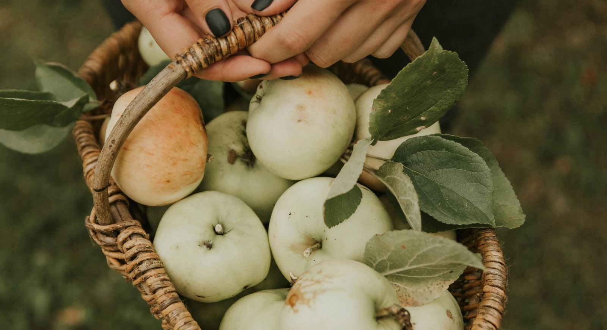

There's something almost poetic about the oldest remedies. They don't come in sleek packaging. They don't have a PR team or a wellness influencer behind them. They just sit quietly in your kitchen — a bottle of raw apple cider vinegar with its cloudy sediment, a jar of honey catching the morning light — waiting to be noticed.
People have been using ACV and honey to support digestion for centuries. Long before the supplement aisle, before probiotic powders and gut-health gummies, there was this: a spoonful of something sharp, a spoonful of something sweet, dissolved in warm water and drunk on an empty stomach. Simple. Unhurried. Quietly effective.
What if the answer to better digestion didn't require a new product — just a new morning ritual?

Some remedies are ancient for a reason. They work — gently, quietly, every morning.
Why These Two Work Better Together
Apple cider vinegar on its own is sharp, acidic, and honestly not the most pleasant thing to drink straight. Honey on its own is sweet and soothing, but its effects are mild. Together, though, they balance each other — the acidity softened by the honey's warmth, the sweetness grounded by the vinegar's edge. More than the taste, their actions in the gut are genuinely complementary.
ACV works on the acid side of digestion, supporting stomach function and helping break down what you eat. Honey works on the microbial side, feeding beneficial gut bacteria and drawing water into the colon to keep things moving. One sharpens, one softens. One activates, one nourishes. The combination covers ground that neither covers alone.
What if your gut doesn't need more intervention — just two ingredients and a glass of warm water, before the day begins?
What Apple Cider Vinegar Actually Does
Raw, unfiltered ACV contains acetic acid — and it's this compound that does most of the digestive work. Acetic acid has a mild stimulating effect on the digestive system: it can encourage the production of stomach acid, support the breakdown of food, and help move things through the digestive tract more consistently.
ACV is also mildly acidic in a way that can help balance the pH environment of your digestive tract. When that environment is off — too alkaline, too fermented, too sluggish — digestion slows, and the downstream effects are felt. A gentle, daily dose of ACV may help recalibrate that environment over time.
The science on ACV and digestion is promising but still developing. Most studies are small, and the mechanisms aren't fully mapped. What we do know is that acetic acid has documented effects on gastric emptying and blood sugar, and that many people report meaningful improvements in regularity with consistent use. As with most gentle, natural interventions, individual responses vary — and that's not a reason to dismiss it, just a reason to listen to your own body closely.
What Honey Brings to Your Gut
Honey isn't just sweetness. Raw honey contains natural prebiotics — compounds that feed and support the beneficial bacteria living in your gut. A healthy microbiome is one of the most important foundations of good digestion, and most of us could do more to protect it.
Honey also has a mild laxative effect, largely because its natural sugars draw water into the colon. Softer stools, more consistent movement, less straining — these are gentle changes, not dramatic ones. But gentle is exactly the point. Your gut doesn't need to be shocked into functioning. It needs to be supported.
One small thing worth knowing: very hot water can degrade some of honey's beneficial enzymes. Warm water — around 37–43°C, the temperature of a comfortable bath — preserves everything honey brings to the glass. That's the sweet spot.
Raw honey — not just sweetness, but a quiet act of care for the bacteria that keep you well.
Your ACV & Honey Morning Ritual
This works best on an empty stomach, before breakfast or coffee. It takes less than two minutes to make — and the ritual itself, the small act of preparing something intentional for your body, is part of what makes it meaningful.
Start with warm water — not hot
Fill a glass with about 250ml of warm water. It should feel comfortable to hold — roughly the temperature of a bath, around 37–43°C. This temperature is important: it keeps honey's beneficial enzymes intact, and warm liquid is gentler on an empty stomach than cold. Think of it as the base that carries everything else.
Add 1–2 tablespoons of apple cider vinegar
Start with 1 tablespoon if you're new to this. Your stomach is meeting something acidic first thing in the morning — give it time to adjust. Use raw, unfiltered ACV with the mother (the cloudy sediment at the bottom). That's where most of the beneficial compounds live. Shake the bottle gently before pouring.
Stir in 1–2 teaspoons of honey
Add 1–2 teaspoons of raw honey and stir until dissolved. Raw honey retains its natural enzymes and prebiotics — processed honey has most of those cooked out. The honey also softens the sharpness of the ACV, making the whole drink genuinely pleasant rather than something you endure. If it still feels too tart, add a little more honey. Adjust until it suits you.
Drink slowly, on an empty stomach
Sip it — don't rush. Drinking it slowly gives your digestive system time to respond, and it makes the ritual feel like something you chose, not something you're just getting through. Wait at least 20–30 minutes before eating. Then have your breakfast. And remember: drink plenty of water throughout the rest of your day. ACV is a gentle stimulant for your digestive system — hydration is what keeps that system running smoothly.
The Brand I Reach For — and Why
Not all apple cider vinegars are created equal. The one thing that matters most: it should be raw, organic, unfiltered, and contain the mother — the cloudy, living culture of beneficial bacteria and enzymes that forms naturally during fermentation. Clear, filtered ACV has most of that stripped out.
My personal go-to is Bragg. For everyday convenience, their Apple Cider Vinegar Capsules are a genuinely useful option — especially on mornings when you're traveling or just can't face the taste. On slower weekends, I prefer the real thing: Bragg's Organic Apple Cider Vinegar in a glass of warm water with honey, the way this ritual was meant to be done. There are also many other quality options available — whatever you choose, just check that label for "raw," "unfiltered," and "with the mother."
The ritual takes two minutes. What it gives back accumulates quietly, over weeks and months.
A Gentle Word of Caution
ACV is acidic, and that acidity can irritate tooth enamel over time if you drink it undiluted. Always dilute it well — never drink it straight — and rinse your mouth with plain water afterwards. If you wear braces or have sensitive teeth, it's worth being especially mindful.
Start small. One tablespoon is enough to begin with. Some people notice results quickly; for others, it takes a few weeks of consistent daily practice. This is not a quick fix. It's a ritual — and rituals ask for patience and consistency, not urgency.
If you have chronic or severe constipation, please see a doctor. ACV and honey support a healthy digestive system beautifully, but they're part of a broader picture that includes what you eat, how much you move, how you manage stress, and how well you sleep. No single remedy works in isolation — and your gut knows the difference between being supported and being expected to compensate for everything else.
Two minutes. Every morning. Just for you.
The oldest remedies endure because they work — not dramatically, not overnight, but quietly and honestly over time. A tablespoon of ACV, a spoonful of honey, a glass of warm water. That's all. Your gut has been waiting for you to offer it something this simple. What if you started tomorrow morning?
Nourish your gut
If you're building better habits from the inside out, your supplements should be just as clean as your rituals.
BioTRUST uses research-backed ingredients with no artificial colors, sweeteners, or fillers — the kind of quality that actually supports what you're already doing.
Shop BioTRUST